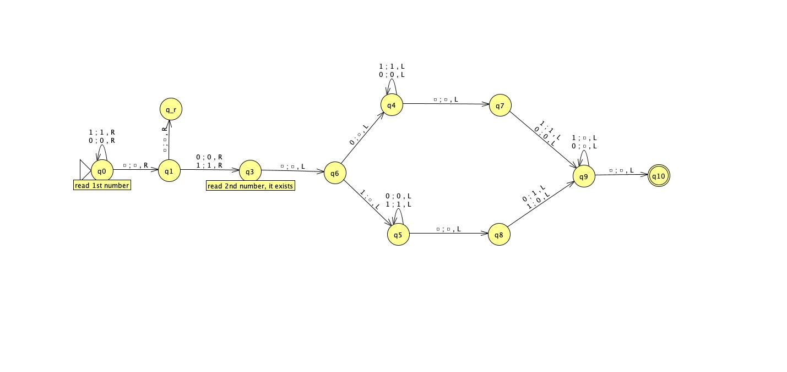

San Diego, CA February 2025
| 1 | 2 | 3 | 4 | 5 |
| 6 | 7 | 8 | 9 | 10 |
| 11 | 12 | 13 | 14 | 15 |
| 16 | 17 | 18 | 19 | 20 |
| 21 | 22 | 23 | 24 | 25 |
| 26 | 27 | 28 | 29 | 30 |
| 31 | 32 | 33 | 34 | 35 |
| 36 | 37 | 38 | 39 | 40 |
| 41 | 42 | 43 | 44 | 45 |
| 46 | 47 | 48 | 49 | 50 |
| 51 | 52 | 53 | 54 | 55 |
| 56 | 57 | 58 | 59 | 60 |
| 61 | 62 | 63 | 64 | 65 |
| 66 | 67 | 68 | 69 | 70 |
| 71 | 72 | 73 | 74 | 75 |
| 76 | 77 | 78 | 79 | 80 |
| 81 | 82 | EOC1 | EOC2 | EOC3 |
Exercise 2.1: (Linear Dependence Example)
We can observe that: \[(1, -1) + (1, 2) - (2, 1) = (0,0) = \boldsymbol{0}\] Thus, the set of three provided vectors is linearly dependent.
Exercise 2.2: (Matrix Representations: Example)
\(V\) is a vector space with basis
\(\{ \ket{0}, \ket{1} \}\).
\[A\ket{0} = \ket{1} \implies
A\begin{bmatrix} 1 \\ 0 \end{bmatrix} = \begin{bmatrix} 0 \\ 1
\end{bmatrix} \implies \text{ first column of A is }
\ket{1}\] as multiplication of a 2 by 2 matrix by \(\ket{0}\) is just extracting the first
column. Also \[A\ket{1} = \ket{0} \implies
A\begin{bmatrix} 0 \\ 1 \end{bmatrix} = \begin{bmatrix} 1 \\ 0
\end{bmatrix} \implies \text{ second column of A is } \ket{0}\]
Thus \(A = \begin{bmatrix} 0 & 1 \\ 1
& 0 \end{bmatrix}\).
We know, from (2.7), that \(\ket{v_1} =
\ket{+} = \begin{bmatrix} \frac{1}{\sqrt{2}} \\ \frac{1}{\sqrt{2}}
\end{bmatrix}\) and \(\ket{v_2} =
\ket{-} = \begin{bmatrix} \frac{1}{\sqrt{2}} \\ \frac{-1}{\sqrt{2}}
\end{bmatrix}\) span the \(\mathbb{C}^{2}\), they also form a basis
for \(\mathbb{C}^2\), as they are
linearly independent (the only solution for \(c_1\ket{+} + c_2\ket{-} = 0\) is
trivial).
So we can form following linear operators \(A_i\) from \(\mathbb{C}^{2}\) to \(\mathbb{C}^{2}\) :
\(A_1\ket{0} = \ket{+}\) and \(A_1\ket{1} = \ket{-}\)
\(A_2\ket{0} = \ket{-}\) and \(A_2\ket{1} = \ket{+}\)
\(A_3\ket{+} = \ket{0}\) and \(A_3\ket{-} = \ket{1}\)
\(A_4\ket{+} = \ket{1}\) and \(A_4\ket{-} = \ket{0}\)
We can compute \(A_2 = \begin{bmatrix} a
& b \\ c & d \end{bmatrix}\), where \(\begin{bmatrix} a & b \\ c & d
\end{bmatrix} \begin{bmatrix} 1 \\ 0 \end{bmatrix} = \begin{bmatrix}
\frac{1}{\sqrt{2}} \\ \frac{-1}{\sqrt{2}} \end{bmatrix}\) and
\(\begin{bmatrix} a & b \\ c & d
\end{bmatrix} \begin{bmatrix} 0 \\ 1 \end{bmatrix} = \begin{bmatrix}
\frac{1}{\sqrt{2}} \\ \frac{1}{\sqrt{2}} \end{bmatrix}\). We can
trivially see, that \(A_2 = \begin{bmatrix}
\frac{1}{\sqrt{2}} & \frac{1}{\sqrt{2}} \\ \frac{-1}{\sqrt{2}} &
\frac{1}{\sqrt{2}} \end{bmatrix}\)
A case \(A_3 = \begin{bmatrix} e & f \\ g
& h \end{bmatrix}\) is a bit more interesting, because we
cannot just extract the columns. We can write in matrix form. \[\begin{bmatrix} e & f \\ g & h
\end{bmatrix} \begin{bmatrix} \frac{1}{\sqrt{2}} &&
\frac{1}{\sqrt{2}} \\ \frac{1}{\sqrt{2}} && \frac{-1}{\sqrt{2}}
\end{bmatrix} = I\] We can multiply both sides on the right by a
transpose of the second matrix, as it is orthogonal. \[A_3 = \begin{bmatrix} e & f \\ g & h
\end{bmatrix} = \begin{bmatrix} \frac{1}{\sqrt{2}} &&
\frac{1}{\sqrt{2}} \\ \frac{1}{\sqrt{2}} && \frac{-1}{\sqrt{2}}
\end{bmatrix}\]
Exercise 2.3: (Matrix representation for operator products)
We have the following combination of linear operators and vector spaces \(V \xrightarrow{A} W \xrightarrow{B} X\). From (2.12) we can write: \[A\ket{v_i} = \sum_{j}{A_{ji}\ket{w_j}}\text{, and } B\ket{w_j} = \sum_{k}{B_{kj}\ket{x_k}} \tag{1}\] \[BA\ket{v_j} = B(\sum_{j}{A_{ji}\ket{v_j}}) \text{ from (1)}\] \[B(\sum_{j}{A_{ji}\ket{v_j}}) = \sum_{j}{A_{ji}B(\ket{v_j}}) \text{ from linearity of inputs in (2.10)}\] \[= \sum_{j}{A_{ji}\sum_{k}{B_{kj}\ket{x_k}}} \text{ from (1)}\] \[= \sum_k(\sum_j{B_{kj}A_{ji}) \ket{x_k}} \text{ rearranging the sum order} \tag{2}\] If we look from the point of view of a linear operation from V to X, then we need to have some matrix \(C\), that would give us: \[C\ket{v_i} = \sum_k{C_{ki}\ket{x_k}}\] It is precisely \[BA_{ki} = \sum_j{B_{kj}A_{ji}} \text{ from (2)}\]
Exercise 2.4: (Matrix representation for identity)
Exercise 2.5
Exercise 2.6
Here we need to show, that any inner product \((\cdot, \cdot)\) is conjugate-linear in the first argument. \[(\sum_{i}{\lambda_i \ket{w_i}}, \ket{v}) = (\ket{v}, \sum_{i}{\lambda_i \ket{w_i}})^{*} \text{ from (2.13 (2))}\] \[= (\sum_{i}{\lambda_i(\ket{v}, \ket{w_i})})^{*} \text{ from linearity of second inner-product argument (2.13 (1))}\] \[= \sum_{i}{(\lambda_i(\ket{v}, \ket{w_i}))^*} \text{ as conjugate of a sum is a sum of conjugates}\] \[= \sum_{i}{\lambda_i^*(\ket{v}, \ket{w_i})^*} \text{ as conjugate of a product is a product of conjugates}\] \[= \sum_{i}{\lambda_i^*(\ket{w_i}, \ket{v})} \text{ from (2.13 (2))}\]
Exercise 2.7
\((\ket{v}, \ket{w}) = ((1, -1), (1, 1)) = \begin{bmatrix} 1^* -1^* \end{bmatrix} \begin{bmatrix} 1^* \\ 1^* \end{bmatrix} = \begin{bmatrix} 1 -1 \end{bmatrix} \begin{bmatrix} 1 \\ 1 \end{bmatrix} = 1 - 1 = 0\). Precisely following (2.14) we establish, that \(\ket{w} \text{ and } \ket{v} \text{ are orthogonal}\). Their normalized forms are \(\frac{v}{\| \ket{v \|}} = (\frac{1}{\sqrt{2}}, \frac{-1}{\sqrt{2}})\) and \(\frac{w}{\| \ket{w \|}} = (\frac{1}{\sqrt{2}}, \frac{1}{\sqrt{2}})\), as both have a norm of \(\sqrt{2}\).
Exercise 2.8
Exercise 2.9: (Pauli operators and the outer product)
Consider:
\(\ket{0}\bra{0} = \begin{bmatrix}1 \\ 0\end{bmatrix}\begin{bmatrix}1 & 0\end{bmatrix} = \begin{bmatrix}1 & 0\\ 0 & 0\end{bmatrix}\)
\(\ket{0}\bra{1} = \begin{bmatrix}1 \\ 0\end{bmatrix}\begin{bmatrix}0 & 1\end{bmatrix} = \begin{bmatrix}0 & 1\\ 0 & 0\end{bmatrix}\)
\(\ket{1}\bra{0} = \begin{bmatrix}0 \\ 1\end{bmatrix}\begin{bmatrix}1 & 0\end{bmatrix} = \begin{bmatrix}0 & 0\\ 1 & 0\end{bmatrix}\)
\(\ket{1}\bra{1} = \begin{bmatrix}0 \\ 1\end{bmatrix}\begin{bmatrix}0 & 1\end{bmatrix} = \begin{bmatrix}0 & 0\\ 0 & 1\end{bmatrix}\)
\(X = \begin{bmatrix}0 & 1 \\ 1 & 0\end{bmatrix} = \ket{0}\bra{1} + \ket{1}\bra{0}\)
\(Y=\begin{bmatrix}0 & -i \\ i & 0\end{bmatrix} = i\ket{0}\bra{1} - i\ket{1}\bra{0}\)
\(Z=\begin{bmatrix}1 & 0 \\ 0 & -1\end{bmatrix} = \ket{0}\bra{0} - \ket{1}\bra{1}\)
Exercise 2.10
Exercise 2.11: (Eigendecomposition of the Pauli matrices)
X = \(\begin{bmatrix} 0 & 1 \\ 1 & 0 \end{bmatrix} \implies\)characteristic equation is \(det(\begin{bmatrix} - \lambda & 1 \\ 1 & -\lambda \end{bmatrix}) = \lambda^2 - 1\) and the solution is \(\lambda = \pm1\).
\(\lambda = 1\), Solving \(X\ket{v} = \ket{v} \implies \begin{bmatrix} 0
& 1 \\ 1 & 0 \end{bmatrix}\begin{bmatrix} v_1 \\ v_2
\end{bmatrix}=\begin{bmatrix} v_1 \\ v_2 \end{bmatrix} \implies
\begin{bmatrix} v_2 \\ v_1 \end{bmatrix}=\begin{bmatrix} v_1 \\ v_2
\end{bmatrix}\). Thus the eigenvector is any scalar multiple of
\(\begin{bmatrix} 1 \\ 1
\end{bmatrix}\)
\(\lambda = -1\), Solving \(X\ket{v} = -\ket{v} \implies \begin{bmatrix} 0 & 1 \\ 1 & 0 \end{bmatrix}\begin{bmatrix} v_1 \\ v_2 \end{bmatrix}=\begin{bmatrix} -v_1 \\ -v_2 \end{bmatrix} \implies \begin{bmatrix} v_2 \\ v_1 \end{bmatrix} = \begin{bmatrix} -v_1 \\ -v_2 \end{bmatrix}\). Thus the eigenvector is any scalar multiple of \(\begin{bmatrix} 1 \\ -1 \end{bmatrix}\)
Y = \(\begin{bmatrix} 0 & -i \\ i & 0 \end{bmatrix} \implies\)characteristic equation is \(det(\begin{bmatrix} - \lambda & -i \\ i & -\lambda \end{bmatrix}) = \lambda^2 - 1\) and the solution is \(\lambda = \pm 1\)
\(\lambda = 1\), Solving \(Y\ket{v} = i\ket{v} \implies \begin{bmatrix}0 & -i \\ i & 0\end{bmatrix}\begin{bmatrix}v_1 \\ v_2\end{bmatrix} = \begin{bmatrix}v_1 \\ v_2\end{bmatrix} \implies \begin{bmatrix}-iv_2 \\ iv_1\end{bmatrix} = \begin{bmatrix}v_1 \\ v_2\end{bmatrix}\)
\(\lambda = -1\), Solving \(Y\ket{v} = -i\ket{v} \implies \begin{bmatrix}0 & -i \\ i & 0\end{bmatrix}\begin{bmatrix}v_1 \\ v_2\end{bmatrix} = \begin{bmatrix}-v_1 \\ -v_2\end{bmatrix} \implies \begin{bmatrix}-iv_2 \\ iv_1\end{bmatrix}= \begin{bmatrix}-v_1 \\ -v_2\end{bmatrix}\)
Z = \(\begin{bmatrix} 1 & 0 \\ 0 & -1 \end{bmatrix} \implies\) characteristic equation is \(\det(\begin{bmatrix} 1 - \lambda & 0 \\ 0 & -1 - \lambda \end{bmatrix}) = \lambda^2 - 1\), and the solution is \(\lambda = \pm1\).
\(\lambda = 1\), Solving \(Z\ket{v} = \ket{v} \implies \begin{bmatrix} 1 & 0 \\ 0 & -1 \end{bmatrix} \begin{bmatrix} v_1 \\ v_2 \end{bmatrix} = \begin{bmatrix} v_1 \\ v_2 \end{bmatrix} \implies \begin{bmatrix} v_1 \\ -v_2 \end{bmatrix} = \begin{bmatrix} v_1 \\ v_2 \end{bmatrix}.\) Thus the eigenvector is any scalar multiple of \(\begin{bmatrix} 1 \\ 0 \end{bmatrix}\)
\(\lambda = -1\), Solving \(Z\ket{v} = -\ket{v} \implies \begin{bmatrix} 1 & 0 \\ 0 & -1 \end{bmatrix} \begin{bmatrix} v_1 \\ v_2 \end{bmatrix} = \begin{bmatrix} -v_1 \\ -v_2 \end{bmatrix} \implies \begin{bmatrix} v_1 \\ -v_2 \end{bmatrix} = \begin{bmatrix} -v_1 \\ -v_2 \end{bmatrix}.\) Thus the eigenvector is any scalar multiple of \(\begin{bmatrix} 0 \\ 1 \end{bmatrix}\)
Exercise 2.12
\[\text{Consider } A - \lambda I = \begin{bmatrix}1 - \lambda & 0 \\ 1& 1 - \lambda\end{bmatrix} \implies \det(A -\lambda I) = (1 - \lambda)^{2} = 0 \implies \lambda = 1 \text{ is the only eigenvalue.}\]
Exercise 2.13
\[(\ket{w}\bra{v})^{\dagger} = \bra{v}^{\dagger}\ket{w}^{\dagger} \text{ from the fact, that } (AB)^{\dagger} = B^{\dagger}A^{\dagger}.\] \[\bra{v}^{\dagger}\ket{w}^{\dagger} = \ket{v}\bra{w} \text{ by convention}\]
Exercise 2.14: (Anti-linearity of the adjoint)
\[\text{Consider } (\sum_i{a_iA_i})^{*} = \sum_i{(a_iA_i)^{*}} = \sum_i{a_i^*A_i^*} \text{ as conjugation is linear}\]
\[\text{ Now consider } ((\sum_i{a_iA_i})^{*})^{T} = (\sum_i{a_i^*A_i^*})^{T} = \sum_i{a_i^*(A_i^*)^{T}} = \sum_i{a_i^*A_i^{\dagger}}\text{ as } a_i \text{ is a scalar }\]
\[\text{ Thus we have established, that adjoint operation is anti-linear, namely: } \sum_i{a_iA_i}^{\dagger} = \sum_i{a_i^{*}A_i^{\dagger}}\]
Exercise 2.15
\((A^{\dagger})^{\dagger} = ((A^{\dagger})^{T})^{*} = (((A^{T})^{*})^{T})^{*} = (((A^{T})^{*})^{*})^{T}\), as taking a conjugate and transposing can easily be interchanged. Conjugating each element in the matrix twice just yields the same initial value, as \((z^{*})^{*} = z , \forall z \in \mathbb{C}\) So we have: \(((A^T)^T) = A\) from the definition of the transpose.
Exercise 2.16
\[\text{We can write out } P^2 \text{ explicitly using (2.35) } P^{2} = (\sum_{i=1}^{k}{\ket{i}\bra{i}})(\sum_{j=1}^{k}{\ket{j}\bra{j}}) = \sum_{i=1}^{k}\sum_{j=1}^{k}\ket{i}\bra{i}\ket{j}\bra{j}\] \[\text{As we have orthonormality} \bra{i}\ket{j} = \delta_{ij} = \begin{cases}1 & i=j \\ 0 & i \neq j\end{cases} \text{ the above double sum colapses into}\] \[\text{a single sum }\sum_{i=1}^{k}{\ket{i}\bra{i}} = P\]
Exercise 2.17
!TODO: ASK A QUESTION DID I SPLIT THE IFF CORRECTLY HERE! \[\implies \text{Hermitian matrix has real eigenvalues.}\] \[\text{Consider } (\ket{v}, H\ket{v}) = (H^{\dagger}\ket{v}, \ket{v}) = (H\ket{v}, \ket{v})\] \[(\ket{v},H\ket{v}) = (\ket{v},\lambda\ket{v}) = \lambda(\ket{v},\ket{v}) \text{ from (2.13)}\] \[\text{From (1) } (\ket{v}, H\ket{v}) = (\lambda\ket{v}, \ket{v}) = \lambda^{*}(\ket{v}, \ket{v}) \text{ from (2.15)}.\] \[\text{We have } \lambda(\ket{v},\ket{v}) = (\ket{v}, H\ket{v}) = \lambda^{*} (\ket{v},\ket{v}) \implies \lambda^{*} = \lambda \implies \text{ eigenvalue is real}\] \[\text{As complex conjugate of a complex number is equal to itself and thus imaginary part is zero}.\] \[\impliedby \text{A normal matrix that has real eigenvalues is Hermitian}\] \[\text{From Theorem 2.1 on page 71 we know, that any normal operator on a vector space V is diagonal}\] \[\text{with respect to some orthonormal basis for V. Thus it has a diagonal representation. Namely:}\] \[A = \sum_{i}{\lambda_i}\ket{i}\bra{i} \text{, where the vectors} \ket{i} \text{form an orthonormal set of eigenvectors for A}.\] \[\text{with corresponding eigenvalues } \lambda_{i}. \text{ Consider } A^{\dagger} = (\sum_{i}{\lambda_i}\ket{i}\bra{i})^{\dagger} = \sum_{i}{\lambda_i^{*}\bra{i}^{\dagger}\ket{i}^{\dagger}}\] \[= \sum_{i}\lambda_{i}\ket{i}\bra{i} \text{ as } \lambda_i \text{ is real}. \implies A^{\dagger} = A \implies A \text{ is Hermitian}\]
Exercise 2.18
\[\text{For Unitary } U, \text{ following holds for its eigenpairs: } U\ket{v} = \lambda \ket{v} \implies \|U\ket{v}\|_2 = \| \lambda \ket{v}\|_2\] \[\text{Say } \ket{\psi} = U\ket{v} \implies \bra{\psi} = \ket{\psi}^{\dagger} = \ket{v}^{\dagger}U^{\dagger} = \bra{\psi}U^{\dagger}\] \[\text{From } (2.16) \text{ we know, that } \|U\ket{v}\|_2 = \|\ket{\psi}\|_2 = \sqrt{\bra{\psi}\ket{\psi}} = \sqrt{\bra{v}U^{\dagger}U\ket{v}} = \sqrt{\bra{v}\ket{v}} = \|\ket{v}\|_2\] \[\text{Thus unitary transformations preserve the inner product and, therefore, the Euclidean norm of vectors}.\] \[\text{We can rewrite } (1) \text{ as } \|\ket{v}\|_2 = \| \lambda \ket{v} \|_2 \implies | \lambda | = 1. \text{ It is a complex number on unit circle}.\] \[\lambda = \cos(\theta) + i \sin(\theta) = e^{i \theta} \text{ from Eulers Formula}.\]
Exercise 2.19: (Pauli matrices: Hermitian and unitary)
Matrix A is Hermitian if \(A^{\dagger} =
A\), matrix B is unitary if \(B^{\dagger}B = BB^{\dagger} = I\)
Now let’s consider each of the Pauli matrices
\(\sigma_0 = I = \begin{bmatrix} 1
& 0 \\ 0 & 1 \end{bmatrix}\)
\(I^{\dagger} = (I^{T})^{*} = I\) as
identity is symmetric, and complex conjugate of a real value is just
itself, thus I is Hermitian.
\(I^{\dagger}I = II = I = II^{\dagger}
\implies I\) is unitary
\(\sigma_1=\sigma_x=X = \begin{bmatrix}
0 & 1 \\ 1 & 0 \end{bmatrix}\)
\(X^{\dagger} = (X^{T})^* = \begin{bmatrix} 0
& 1 \\ 1 & 0 \end{bmatrix}^{*} = X \implies X\) is
Hermitian
\(X^{\dagger}X = XX = XX^{\dagger} =
\begin{bmatrix} 0 & 1 \\ 1 & 0 \end{bmatrix} \begin{bmatrix} 0
& 1 \\ 1 & 0 \end{bmatrix} = \begin{bmatrix} 1 & 0 \\ 0
& 1 \end{bmatrix} = I \implies X\) is unitary
\(\sigma_2=\sigma_y=Y = \begin{bmatrix}
0 & -i \\ i & 0 \end{bmatrix}\)
\(Y^{\dagger} = (Y^{T})^* = \begin{bmatrix} 0
& i \\ -i & 0 \end{bmatrix}^{*} = \begin{bmatrix} 0 & -i \\
i & 0 \end{bmatrix} = Y \implies Y\) is Hermitian
\(Y^{\dagger}Y = YY = YY^{\dagger} =
\begin{bmatrix} 0 & -i \\ i & 0 \end{bmatrix}\begin{bmatrix} 0
& -i \\ i & 0 \end{bmatrix}=\begin{bmatrix} -i^2 & 0 \\ 0
& -i^2 \end{bmatrix}=\begin{bmatrix} 1 & 0 \\ 0 & 1
\end{bmatrix} = I \implies Y\) is unitary
\(\sigma_3=\sigma_z=Z = \begin{bmatrix}
1 & 0 \\ 0 & -1 \end{bmatrix}\)
\(Z^{\dagger} = (Z^{T})^{*} = \begin{bmatrix}
1 & 0 \\ 0 & -1 \end{bmatrix}^{*} = Z \implies Z\) is
Hermitian
\(Z^{\dagger}Z = ZZ = ZZ^{\dagger} =
\begin{bmatrix} 1 & 0 \\ 0 & -1 \end{bmatrix}\begin{bmatrix} 1
& 0 \\ 0 & -1 \end{bmatrix}=\begin{bmatrix} 1 & 0 \\ 0 &
(-1)^2 \end{bmatrix}=I \implies Z\) is unitary
Exercise 2.20: (Basis changes)
Exercise 2.21
Exercise 2.22
Exercise 2.23
Exercise 2.24: (Hermiticity of positive operators)
\[\forall A, A = \frac{A}{2} + \frac{A}{2} = \frac{A}{2} + \frac{A}{2} + \frac{A^{\dagger}}{2} - \frac{A^{\dagger}}{2} = \frac{A + A^{\dagger}}{2} + \frac{A -A^{\dagger}}{2} = \frac{A + A^{\dagger}}{2} + i\frac{A -A^{\dagger}}{2i}.\] \[\text{Call } B = \frac{A + A^{\dagger}}{2} , C + \frac{A -A^{\dagger}}{2i} \implies A = B + iC.\] \[\text{Consider } B^{\dagger} = (\frac{A + A^{\dagger}}{2})^{\dagger} = (\frac{A^{\dagger} + (A^{\dagger})^{\dagger}}{2}) = (\frac{A^{\dagger} + A}{2}) = B \implies B \text{ is Hermitian}\] \[A \text{ is positive } \implies (\ket{v}, A\ket{v}) \in \mathbb{R}_{\geq 0} , \forall\ket{v}. \text{ Rewrite as } (\ket{v}, B\ket{v}) + i(\ket{v}, C\ket{v})\] \[\text{as inner product is linear in the second argument from (2.13)}\] \[(\ket{v}, C\ket{v}) = 0 \text{ as for any } \ket{v} \text{ quantity} (\ket{v}, A\ket{v}) \text{ is real}.\] \[\text{We have } (\ket{v}, A\ket{v}) = (\ket{v}, B\ket{v}) \implies (\ket{v}, (A-B)\ket{v}) = 0 \text{ from } (2.13)\]
Exercise 2.25
Consider inner product \((\ket{v}, A^{\dagger}A\ket{v})\). Call \(A\ket{v}\) to be \(\ket{\psi}\), so we have \((\ket{v}, A^{\dagger}\ket{\psi}) = (A\ket{v}, \ket{\psi})\) from the definition of the Hermitian conjugate in (2.32), we get: \((\ket{\psi}, \ket{\psi}) \geq 0\) from the positivity property of inner product described on page 65.
Exercise 2.26 \[\ket{\psi}^{\otimes2} = \ket{\psi} \otimes \ket{\psi} \text{, analogously } \ket{\psi}^{\otimes3} = \ket{\psi} \otimes \ket{\psi} \otimes \ket{\psi}\] Explicitly: \[\ket{\psi}^{\otimes2} = (\frac{1}{\sqrt{2}}(\ket{0} + \ket{1})) \otimes (\frac{1}{\sqrt{2}}(\ket{0} + \ket{1})) = \frac{1}{2}((\ket{0} + \ket{1}) \otimes (\ket{0} + \ket{1})) \text{ from (2.42) }\] \[= \frac{1}{2}(\ket{0} \otimes \ket{0} + \ket{1} \otimes \ket{0} + \ket{0} \otimes \ket{1} + \ket{1} \otimes \ket{1}) \text{ from distributive properties (2.43. 2.44)}\] Using Kronecker product: \[\ket{0} = \begin{bmatrix}1 \\ 0\end{bmatrix}, \ket{1} = \begin{bmatrix}0 \\ 1\end{bmatrix}, so \ket{\psi}^{\otimes2} = \begin{bmatrix} \frac{1}{\sqrt{2}} \\ \frac{1}{\sqrt{2}}\end{bmatrix} \otimes \begin{bmatrix}\frac{1}{\sqrt{2}} \\ \frac{1}{\sqrt{2}}\end{bmatrix} = \begin{bmatrix}\frac{1}{\sqrt{2}}\begin{bmatrix}\frac{1}{\sqrt{2}} \\ \frac{1}{\sqrt{2}}\end{bmatrix} \\ \frac{1}{\sqrt{2}}\begin{bmatrix}\frac{1}{\sqrt{2}} \\ \frac{1}{\sqrt{2}}\end{bmatrix}\end{bmatrix} = \frac{1}{2}\begin{bmatrix}1 \\ 1\\ 1\\ 1\end{bmatrix}\] Explicitly: \[\ket{\psi}^{\otimes3} = (\frac{1}{\sqrt{2}}(\ket{0} + \ket{1})) \otimes (\frac{1}{\sqrt{2}}(\ket{0} + \ket{1})) \otimes (\frac{1}{\sqrt{2}}(\ket{0} + \ket{1})) = \frac{1}{2\sqrt{2}}((\ket{0} + \ket{1}) \otimes (\ket{0} + \ket{1})) \otimes (\ket{0} + \ket{1}))\] \[= \frac{1}{2\sqrt{2}}(\ket{0} \otimes \ket{0} \otimes \ket{0} + \ket{0} \otimes \ket{0} \otimes \ket{1} + \ket{0} \otimes \ket{1} \otimes \ket{0} + \ket{0} \otimes \ket{1} \otimes \ket{1} + \ket{1} \otimes \ket{0} \otimes \ket{0} + \ket{1} \otimes \ket{0} \otimes \ket{1} +\] \[+ \ket{1} \otimes \ket{1} \otimes \ket{0} + \ket{1} \otimes \ket{1} \otimes \ket{1})\] Using Kronecker product: \[\ket{\psi}^{\otimes3} = \ket{\psi}^{\otimes2} \otimes \ket{\psi} = (\frac{1}{2}\begin{bmatrix}1 \\ 1\\ 1\\ 1\end{bmatrix}) \otimes \begin{bmatrix} \frac{1}{\sqrt{2}}\\\frac{1}{\sqrt{2}}\end{bmatrix} = \frac{1}{2\sqrt{2}}\begin{bmatrix}1 \\ 1\\ 1\\ 1\end{bmatrix} \otimes \begin{bmatrix}1 \\1 \end{bmatrix} = \frac{1}{2\sqrt{2}}\begin{bmatrix}1 \\ 1\\ 1\\ 1\\ 1\\ 1\\ 1\\ 1\\ 1\end{bmatrix}\]
Exercise 2.27
\[X \otimes Z = \begin{bmatrix}0 & 1\\ 1 & 0\end{bmatrix}\begin{bmatrix}1 & 0\\ 0 & -1\end{bmatrix} = \begin{bmatrix}0\begin{bmatrix}1 & 0\\ 0 & -1\end{bmatrix} & 1\begin{bmatrix}1 & 0\\ 0 & -1\end{bmatrix}\\ 1\begin{bmatrix}1 & 0\\ 0 & -1\end{bmatrix} & 0\begin{bmatrix}1 & 0\\ 0 & -1\end{bmatrix}\end{bmatrix} = \begin{bmatrix} 0 & 0 & 1 & 0\\ 0 & 0& 0 & -1\\ 1 & 0 & 0 & 0\\ 0 & -1 & 0 & 0\end{bmatrix}\]
\[I \otimes X = \begin{bmatrix}1 & 0 \\ 0 & 1\end{bmatrix} \otimes \begin{bmatrix}0 & 1 \\ 1 & 0\end{bmatrix} = \begin{bmatrix}1\begin{bmatrix}0 & 1 \\ 1 & 0\end{bmatrix} & 0\begin{bmatrix}0 & 1 \\ 1 & 0\end{bmatrix} \\ 0\begin{bmatrix}0 & 1 \\ 1 & 0\end{bmatrix} & 1\begin{bmatrix}0 & 1 \\ 1 & 0\end{bmatrix}\end{bmatrix} = \begin{bmatrix} 0 & 1 & 0 & 0\\ 1 & 0 & 0 & 0\\ 0 & 0 & 0 & 1\\ 0 & 0 & 1 & 0\end{bmatrix}\]
\[X \otimes I = \begin{bmatrix}0 & 1 \\ 1 & 0\end{bmatrix} \otimes \begin{bmatrix}1 & 0 \\ 0 & 1\end{bmatrix} = \begin{bmatrix}0\begin{bmatrix}1 & 0 \\ 0 & 1\end{bmatrix} & 1\begin{bmatrix}1 & 0 \\ 0 & 1\end{bmatrix} \\ 1\begin{bmatrix}1 & 0 \\ 0 & 1\end{bmatrix} & 0\begin{bmatrix}1 & 0 \\ 0 & 1\end{bmatrix}\end{bmatrix} =\begin{bmatrix} 0 & 0 & 1 & 0\\ 0 & 0 & 0 & 1\\ 1 & 0 & 0 & 0\\ 0 & 1 & 0 & 0\end{bmatrix}\] As parts 2 and 3 are different, we can conclude, that tensor product is not commutative.
Exercise 2.28
Consider \((A \otimes B)^{*}\)
Exercise 2.29
Explicitly \[\text{Consider unitary } A, B \text{ s.t }
AA^{\dagger} = I, BB^{\dagger}=I. \text{ Assume } A \text{ is } m\times
n \text{ matrix, and } B \text{ is } p \times q \text{ matrix}.\]
\[\text{Then }A^{\dagger} \text{ is a }
n\times m \text{ matrix, and } B^{\dagger} \text{ is a } q\times p
\text{ matrix, as we are transposing, and}.\] \[\text{taking a conjugate of each element does not
change the dimensions.}\] \[(A \otimes
B)(A \otimes B)^{\dagger} = (A \otimes B)(A^{\dagger} \otimes
B^{\dagger}) \text{ from (2.53)}\] \[\text{From (2.50) } A \otimes B \text{ has } mp
\text{ rows and } nq \text{ columns, and
} A^{\dagger} \otimes B^{\dagger} \text{ has } qn \text{ rows and } pm
\text{ columns.}\] \[A \otimes B =
\begin{bmatrix}
a_{11}B & a_{12}B & \dots & a_{1n}B\\
a_{21}B & a_{22}B & \dots & a_{2n}B\\
\vdots & \vdots && \vdots\\
a_{m1}B & a_{m2}B &\dots & a_{mn}B
\end{bmatrix}
\text{where } a_{ij} \text{ are corresponding elements of }
A\] \[A^{\dagger} \otimes B^{\dagger}
=
\begin{bmatrix}
a^{\dagger}_{11}B^{\dagger} & a^{\dagger}_{12}B^{\dagger} &
\dots & a^{\dagger}_{1m}B^{\dagger}\\
a_{21}B^{\dagger} & a_{22}B^{\dagger} & \dots &
a_{2m}B^{\dagger}\\
\vdots & \vdots && \vdots\\
a_{n1}B^{\dagger} & a_{n2}B^{\dagger} &\dots &
a_{nm}B^{\dagger}
\end{bmatrix}
\text{where } a^{\dagger}_{ij} \text{ are corresponding elements of
} A^{\dagger}\] As number of block rows in (1) is matching number
of block columns in (2), and each block in (1) has the same number of
columns as each block has rows in (2) then we can use Block Matrix
Multiplication Formula. \[C_{ij} =
\sum_{k}a_{ik}Ba^{\dagger}_{kj}B^{\dagger} =
\sum_{k}{a_{ik}a^{\dagger}_{kj}BB^{\dagger}} =
\sum_{k}{a_{ik}a^{\dagger}_{kj}I_p} \text{ as } B \text{ is
unitary}.\] \[\text{We know, that }
AA^{\dagger} = I_m \implies (AA^{\dagger})_{ij} = (I_m)_{ij} \implies
\sum_{k}{a_{ik}a^{\dagger}_{kj}} = \delta_{ij}\] \[\text{Thus, } C_{ij} = \begin{cases}I_p & i =
j \\0 & i \neq j\end{cases} \implies (A \otimes B)(A^{\dagger}
\otimes B^{\dagger}) = \begin{bmatrix}
I_p & 0 & \dots & 0\\
0 & I_p & \dots & 0\\
\vdots & \vdots && \vdots\\
0 & 0 &\dots &I_p
\end{bmatrix}
= I_{mp}\] \[\text{One could
follow the same line of arguments as above to determine, that }
(A^{\dagger} \otimes B^{\dagger})(A \otimes B) = I_{qn}\] \[\text{Thus tensor product of two unitary
operators is unitary.}\] Mixed-product
property
Consider matrices \(A, B, C, D\), where
\(A\) is \(m
\times n\), \(B\) is \(p \times q\), \(C\) is \(n \times
r\), \(D\) is \(q \times s\). It is important, that number
of columns in \(A,B\) matches the
number of rows in \(C,D\) respectively.
So when we compute \((A \otimes B)\) we
have a matrix of size \(mp \times qn\),
\((C \otimes D)\) we have a matrix of
size \(nq \otimes rs\), and when can
multiply them, as the dimensions do match, we expect matrix of size
\(mp \times rs\) as a result. \[(A\otimes B)(C \otimes D) =
\begin{bmatrix}
\sum_k{a_{1k}Bc_{k1}D} & \sum_k{a_{1k}Bc_{k2}D} & \dots &
\sum_k{a_{1k}Bc_{kr}D} \\
\sum_k{a_{2k}Bc_{k1}D} & \sum_k{a_{2k}Bc_{k2}D} & \dots &
\sum_k{a_{2k}Bc_{kr}D} \\
\vdots & \vdots && \vdots\\
\sum_k{a_{mk}Bc_{k1}D} & \sum_k{a_{mk}Bc_{k2}D} & \dots &
\sum_k{a_{mk}Bc_{kr}D} \\
\end{bmatrix}
=\] \[=
\begin{bmatrix}
(AC)_{11}BD & (AC)_{12}BD & \dots & (AC)_{1r}BD \\
(AC)_{21}BD & (AC)_{22}BD & \dots & (AC)_{2r}BD \\
\vdots & \vdots && \vdots\\
(AC)_{m1}BD & (AC)_{m2}BD & \dots & (AC)_{mr}BD \\
\end{bmatrix} = (AC) \otimes (BD).\] Using properties of
tensor products
\[(A \otimes B)(A^{\dagger} \otimes
B^{\dagger}) = (AA^{\dagger}) \otimes(BB^{\dagger}) = I_m \otimes I_p =
I_{mp}\] \[\text{with the number of
rows and columns between the original matrix and the transpose matching
trivially.}\]
Exercise 2.30
\[\text{Consider Hermitian }A, B \text{ s.t } A^{\dagger}=A, B^{\dagger} = B. \text{ Now form } (A \otimes B)^{\dagger} = A^{\dagger} \otimes B^{\dagger} \text{ from (2.53)} = A \otimes B\] \[\text{Thus we have established, that the tensor product of two Hermitian matrices is Hermitian,}\] \[\text{as } (A \otimes B)^{\dagger} = A \otimes B\]
Exercise 2.31
Exercise 2.32
Exercise 2.33
Computing \(H^{\otimes 2}\) \[H^{\otimes 2} = H \otimes H = \frac{1}{\sqrt{2}}\begin{bmatrix}1 & 1 \\ 1 & -1\end{bmatrix} \otimes \frac{1}{\sqrt{2}}\begin{bmatrix}1 & 1 \\ 1 & -1\end{bmatrix} = \frac{1}{2} \begin{bmatrix} 1 \begin{bmatrix}1 & 1 \\ 1 & -1\end{bmatrix} & 1 \begin{bmatrix}1 & 1 \\ 1 & -1\end{bmatrix} \\ 1 \begin{bmatrix}1 & 1 \\ 1 & -1\end{bmatrix} & -1 \begin{bmatrix}1 & 1 \\ 1 & -1\end{bmatrix} \\ \end{bmatrix} = \begin{bmatrix} 1 & 1 & 1 & 1 \\ 1 & -1 & 1 & -1 \\ 1 & 1 & -1 & -1 \\ 1 & -1 & -1 & 1 \end{bmatrix}\] Base case n = 1 \[\text{Substituting } \ket{1} \text{ with } \begin{bmatrix}1 \\ 0\end{bmatrix} \text{ and } \ket{0} \text{ with } \begin{bmatrix}0 \\ 1\end{bmatrix}\] \[\text{ (2.54) becomes } H = \frac{1}{\sqrt{2}}[(\begin{bmatrix}1 \\ 0\end{bmatrix} + \begin{bmatrix}0 \\ 1\end{bmatrix})\begin{bmatrix}1 & 0\end{bmatrix} + (\begin{bmatrix}1 \\ 0\end{bmatrix} - \begin{bmatrix}0 \\ 1\end{bmatrix})\begin{bmatrix}0 & 1\end{bmatrix}]\] \[= \frac{1}{\sqrt2}(\begin{bmatrix}1 \\ 1\end{bmatrix}\begin{bmatrix}1 & 0\end{bmatrix} + \begin{bmatrix}1 \\ -1\end{bmatrix}\begin{bmatrix}0 & 1\end{bmatrix}) = \frac{1}{\sqrt{2}}(\begin{bmatrix}1 & 0 \\ 1 & 0\end{bmatrix}+\begin{bmatrix} 0 & 1 \\ 0 & -1\end{bmatrix}) = \frac{1}{\sqrt{2}}\begin{bmatrix}1 & 1 \\ 1 & -1\end{bmatrix}\] \[\text{Which is indeed the classical matrix representation of the Hadamard operator}\] Indiction hypothesis n = k \[\text{ Assume for } n = k \text{ the following holds } H^{\otimes k} = \frac{1}{\sqrt{2^k}}\sum_{x,y\in \{0,1\}^k}{(-1)^{xy}\ket{x}\bra{y}}\] \[\text{The subscript in the sum directly above just means, that x and y are binary strings of length k}\] Induction step n = k + 1 \[H^{\otimes (k+1)} = (\frac{1}{\sqrt{2}}[(\ket{0}+\ket{1})\bra{0} + (\ket{0}-\ket{1})\bra{1}]) \otimes \frac{1}{\sqrt{2^k}}\sum_{x,y\in \{0,1\}^k}{(-1)^{xy}\ket{x}\bra{y}}\] \[= (\frac{1}{\sqrt{2}}(\ket{0}\bra{0} + \ket{1}\bra{0} + \ket{0}\bra{1} - \ket{1}\bra{1}) \otimes H^{\otimes k}\] \[= \frac{1}{\sqrt{2^1}}\sum_{x,y \in \{0, 1\}}{(-1)^{xy}\ket{x}\bra{y}} \otimes \frac{1}{\sqrt{2^k}}\sum_{x,y\in \{0,1\}^k}{(-1)^{xy}\ket{x}\bra{y}} \overset{*}{=}\] \[\text{We compute } xy \text{ to determine the sign by performing the binary inner product}\]
| xy | x | y |
|---|---|---|
| 0 | 0 | 0 |
| 0 | 0 | 1 |
| 0 | 1 | 0 |
| 1 | 1 | 1 |
| \(xy = x_1y_1 + x_2y_2 \mod 2\) | \(x=x_1x_2\) | \(y=y_1y_2\) |
|---|---|---|
| 0 | 00 | 00 |
| 0 | 00 | 01 |
| 0 | 00 | 10 |
| 0 | 00 | 11 |
| 0 | 01 | 00 |
| 1 | 01 | 01 |
| 0 | 01 | 10 |
| 1 | 01 | 11 |
| 0 | 10 | 00 |
| 0 | 10 | 01 |
| 1 | 10 | 10 |
| 1 | 10 | 11 |
| 0 | 11 | 00 |
| 1 | 11 | 01 |
| 1 | 11 | 10 |
| 0 | 11 | 11 |
\[\text{We can extend (2.43, 2.44) to } \sum_{i}{\ket{a_i}} \otimes \sum_{i}{\ket{b_i}} = \sum_{i}\sum_{j}{(\ket{a_i} \otimes \ket{b_i})} \tag{1}\] \[= \frac{1}{\sqrt{2^{k+1}}}\sum_{x',y'\in\{0,1\}}\sum_{x'',y''\in\{0,1\}^k}{((-1)^{x'y'}\ket{x'}\bra{y'}) \otimes ((-1)^{x''y''}\ket{x''}\bra{y''})} \text{ from (1)}\] \[= \frac{1}{\sqrt{2^{k+1}}}\sum_{x',y'\in\{0,1\}}\sum_{x'',y''\in\{0,1\}^k}{(-1)^{x'y'}(-1)^{x''y''}[(\ket{x'}\bra{y'}) \otimes (\ket{x''}\bra{y''})]} \text{ from (2.42)}\] \[\text{We can explicitly write out all of the combinations, as } x',y' \text{ can be wither 0 or 1, so we have:}\] \[\frac{1}{\sqrt{2^{k+1}}}(\sum_{x'',y''\in\{0,1\}^k}{(-1)^{0 \cdot 0}(-1)^{x''y''}\ket{0}\bra{0} \otimes \ket{x''}\bra{y''}} + \sum_{x'',y''\in\{0,1\}^k}{(-1)^{0 \cdot 1}(-1)^{x''y''}\ket{0}\bra{1} \otimes \ket{x''}\bra{y''}} +\] \[+ \sum_{x'',y''\in\{0,1\}^k}{(-1)^{1 \cdot 0}(-1)^{x''y''}\ket{1}\bra{0} \otimes \ket{x''}\bra{y''}} + \sum_{x'',y''\in\{0,1\}^k}{(-1)^{1 \cdot 1}(-1)^{x''y''}\ket{1}\bra{1} \otimes \ket{x''}\bra{y''}} ) =\] \[\frac{1}{\sqrt{2^{k+1}}}(\sum_{x'',y''\in\{0,1\}^k}{(-1)^{x''y''}\ket{0}\bra{0} \otimes \ket{x''}\bra{y''}} + \sum_{x'',y''\in\{0,1\}^k}{(-1)^{x''y''}\ket{0}\bra{1} \otimes \ket{x''}\bra{y''}} +\] \[+ \sum_{x'',y''\in\{0,1\}^k}{(-1)^{x''y''}\ket{1}\bra{0} \otimes \ket{x''}\bra{y''}} + \sum_{x'',y''\in\{0,1\}^k}{(-1)^{x''y'' + 1}\ket{1}\bra{1} \otimes \ket{x''}\bra{y''}} \space \space) =\] \[= \frac{1}{\sqrt{2^{k+1}}}(\sum_{x'',y''\in\{0,1\}^k}{(-1)^{x''y''}\begin{bmatrix}\ket{x''}\bra{y''} & 0 \\ 0 & 0\end{bmatrix}} + \sum_{x'',y''\in\{0,1\}^k}{(-1)^{x''y''}\begin{bmatrix}0 & \ket{x''}\bra{y''} \\ 0 & 0\end{bmatrix}} +\] \[+ \sum_{x'',y''\in\{0,1\}^k}{(-1)^{x''y''}\begin{bmatrix}0 & 0 \\ \ket{x''}\bra{y''} & 0\end{bmatrix}} + \sum_{x'',y''\in\{0,1\}^k}{(-1)^{x''y''+1}\begin{bmatrix}0 & 0 \\ 0 & \ket{x''}\bra{y''}\end{bmatrix}} \space \space)\] \[= \frac{1}{\sqrt{2}}\begin{bmatrix}H^{\otimes k} & H^{\otimes k} \\ H^{\otimes k} & -H^{\otimes k}\end{bmatrix} = \frac{1}{\sqrt{2}}\begin{bmatrix}1 & 1 \\ 1 & -1\end{bmatrix} \otimes H^{\otimes k} = H^{\otimes (k+1)}\]. \[\text{From the assumption for } n = k \text{ we have established a fact for } n = k + 1\] \[\text{ thus proving by principal of mathematical induction}.\]
Exercise 2.34
\[\text{Eigenvalues of M are: } \lambda_{1,2} = 4 \pm \sqrt{16 - 7} = 1,7. \text{ Corresponding eigenvectors: }\ket{v_1}=\begin{bmatrix}1 \\ -1\end{bmatrix}, \ket{v_2} = \begin{bmatrix}1 \\ 1\end{bmatrix}.\] \[\text{Diagonal representation of A is: } \frac{\ket{v_1}\bra{v_1}}{\|v_1\|^{2}} + \frac{7\ket{v_2}\bra{v_2}}{\|v_2\|^{2}}\]
Square root \[\sqrt{A} \text{ is defined in (2.1.8) to be } \frac{\ket{v_1}\bra{v_1}}{\|v_1\|^{2}} + \frac{\sqrt{7}\ket{v_2}\bra{v_2}}{\|v_2\|^{2}} = \begin{bmatrix}\frac{1}{2} & -\frac{1}{2}\\ -\frac{1}{2} & \frac{1}{2}\end{bmatrix} + \begin{bmatrix}\frac{\sqrt{7}}{2} & \frac{\sqrt{7}}{2} \\ \frac{\sqrt{7}}{2} & \frac{\sqrt{7}}{2}\end{bmatrix}\] \[= \begin{bmatrix}\frac{1 + \sqrt{7}}{2} & \frac{-1 + \sqrt{7}}{2} \\ \frac{-1 + \sqrt{7}}{2} & \frac{1 + \sqrt{7}}{2}\end{bmatrix}\]
Logarithm \[\text{Equivalently } \log(A) = \frac{\log{1}\ket{v_1}\bra{v_1}}{\|v_1\|^{2}} + \frac{\log{7}\ket{v_2}\bra{v_2}}{\|v_2\|^{2}} = \begin{bmatrix}\frac{\log{7}}{2} & \frac{\log{7}}{2} \\ \frac{\log{7}}{2} & \frac{\log{7}}{2}\end{bmatrix} \text{ as }\log{1} = 0 \text{ in any base}.\]
Exercise 2.35: (Exponential of the Pauli matrices)
\[\text{Consider } \vec{v} \cdot \vec{\sigma} = \sum_{i=1}^{3}{v_i\sigma_i}. \text{ Squaring we get: } \sum_{i=1}^{3}\sum_{j=1}^{3}v_i\sigma_iv_j\sigma_j = \sum_{i=1}^{3}\sum_{j=1}^{3}v_iv_j\sigma_i\sigma_j =\] \[= \sum_{i=1}^{3}\sum_{j=1}^{3}v_iv_j(\delta_{ij}I + i\sum_{l=1}^{3}{\epsilon_{ijl}\sigma_l}) \text{ from } (2.78)\] \[= \underbrace{\sum_{i=1}^{3}\sum_{j=1}^{3}v_iv_j\delta_{ij}I}_{(1)} + \underbrace{i\sum_{i=1}^{3}\sum_{j=1}^{3}\sum_{l=1}^{3}{\epsilon_{ijl}v_iv_j\sigma_l}}_{(2)}\] \[(1) = \sum_{i=1}^{3}v_{i}^{2}I \text{ as only the terms with the same index last, as } \delta_{ij} = 0 \text{ for } i = j.\] \[\text{We know, that } i\text{'th component of } \vec{a} \times \vec{b} \text{ is } \sum_{j=1}^{3}\sum_{k=1}^{3}\epsilon_{ijk}a_jb_k \text{. Rewriting } (2) \text{, get:}\] \[i\sum_{l=1}^{3}(\sum_{i=1}^{3}\sum_{j=1}^{3}\epsilon_{ijk}v_iv_j)\sigma_l = i\sum_{l=1}(\vec{v} \times \vec{v})_{l}\sigma_{l} = 0 \text{ as a cross product of a vector with itself is always} 0.\] \[\text{So } (\vec{v} \cdot \vec{\sigma})^2 = \|v\|_2I = I \text{ as } \vec{v} \text{ is a unit vector.}\] \[\text{Say } A=\vec{v}\cdot\vec{\sigma}. \text{ We know: }AA=I. \text{ Consider eigenvalues} A\ket{v} = \lambda\ket{v} \implies AA\ket{v} = A\lambda \ket{v} \implies\] \[I\ket{v} = \lambda A\ket{v} \implies I\ket{v} = \lambda^2\ket{v} \implies \lambda^2 = 1 \implies \lambda = \pm 1.\] \[\text{Say corresponding eigenvectors} \text{ are } \ket{v_{+1}}, \ket{v_{-1}} \text{ then we have following spectral decomposition:}\] \[A= \ket{v_{+1}}\bra{v_{+1}} - \ket{v_{-1}}\bra{v_{-1}} \text{ and } \exp(i\theta \vec{v} \cdot \vec{\sigma}) = \exp(i\theta A) = e^{i\theta}\ket{v_{+1}}\bra{v_{+1}} + e^{-i\theta}\ket{v_{-1}}\bra{v_{-1}} (3)\] \[A^{2} = \ket{v_{+1}}\bra{v_{+1}}\ket{v_{+1}}\bra{v_{+1}} - \ket{v_{+1}}\bra{v_{+1}}\ket{v_{-1}}\bra{v_{-1}} - \ket{v_{-1}}\bra{v_{-1}}\ket{v_{+1}}\bra{v_{+1}} + \ket{v_{-1}}\bra{v_{-1}}\ket{v_{-1}}\bra{v_{-1}}.\] \[\bra{v_{-1}}\ket{v_{-1}} = 1, \bra{v_{+1}}\ket{v_{+1}} = 1, \bra{v_{-1}}\ket{v_{+1}} = 0 \text{ as } \ket{v_{+1}} \text{ and } \ket{v_{-1}} \text{ are orthogonal} \implies \text{ above is:}\] \[A^2 = I = \ket{v_{+1}}\bra{v_{+1}} - 0 + 0 + \ket{v_{-1}}\bra{v_{-1}}\] We can see, that:
\(\ket{v_{+1}}\bra{v_{+1}} = \frac{A + I}{2}\)
\(\ket{v_{-1}}\bra{v_{-1}} = \frac{I - A}{2}\)
\[\text{So } (3) \text{ can be rewritten as: } \exp(i\theta \vec{v} \cdot \vec{\sigma}) = e^{i\theta}\frac{A + I}{2} + e^{-i\theta}\frac{I - A}{2} = A\frac{e^{i \theta} - e^{-i \theta}}{2} + I\frac{e^{i \theta} + e^{-i \theta}}{2}\] \[= Ai\sin(\theta) + I\cos{\theta} = \cos{\theta}I + i\sin{\theta}\vec{v}\cdot \vec{\sigma} \text{ from Euler's formula}.\]
\[\textbf{Note:} \text{ It is also possible to see, that } AA = I \text{ can be computed explicitly without "Levi-Civita symbol"}.\] \[A = \vec{v} \cdot \vec{\sigma} = \sum_{i=1}^{3}v_i\sigma_{i} = v_1\begin{bmatrix}0 & 1 \\ 1 & 0\end{bmatrix} + v_2\begin{bmatrix}0 & -i \\ i & 0\end{bmatrix} + v_3\begin{bmatrix}1 & 0 \\ 0 & -1\end{bmatrix}\] \[= \begin{bmatrix}0 & v_1 \\ v_1 & 0\end{bmatrix} + \begin{bmatrix}0 & -iv_2 \\ iv_2 & 0\end{bmatrix} + \begin{bmatrix}v_3 & 0 \\ 0 & -v_3\end{bmatrix} = \begin{bmatrix}v_3 & v_1-iv_2 \\ v_1 + iv_2 & -v_3\end{bmatrix}\] \[A^2 = \begin{bmatrix} v_3^2 +v_1^2 -iv_1v_2 + iv_1v_2 -iv_2 & v_3v_1 -iv_2v_3 -v_1v_3 + iv_2v_3\\ v_1v_3 + iv_2v_3 -v_3v_1 -iv_2v_3 & v_1^2 +iv_1v_2 - iv_1v_2 -i^2v_2 + v_3 \end{bmatrix}\] \[= \begin{bmatrix}v_1^2+v_2^2+v_3^2 & 0 \\ 0 & v_1^2+v_2^2+v_3^2\end{bmatrix} = I.\] \[\text{as } \vec{v} \text{ is a unit vector}.\]
Exercise 2.36
\(X = \begin{bmatrix} 0 & 1 \\ 1 & 0\end{bmatrix} 0 + 0 = 0 \implies \operatorname{tr}(X) = 0\).
\(Y = \begin{bmatrix} 0 & -i \\ i & 0\end{bmatrix} 0 + 0 = 0 \implies \operatorname{tr}(Y) = 0\).
\(Z = \begin{bmatrix} 1 & 0 \\0 & -1\end{bmatrix} 1 - 1 = 0 \implies \operatorname{tr}(Z) = 0\).
Exercise 2.37: (Cyclic property of the trace)
\[\operatorname{tr}(AB) = \sum_{i=1}^{n}{AB}_{ii} = \sum_{i=1}^{n}\sum_{j=1}^{n}A_{ij}B_{ji} \text{ from the definition of matrix multiplication}\] \[= \sum_{i=1}^{n}\sum_{j=1}^{n}{B_{ji}A_{ij}} \text{, as } B_{ji} \text{ and } A_{ij} \text{ are elements of the matrix and thus commutative scalars}\] \[= \sum_{j=1}^{n}\sum_{i=1}^{n}{B_{ji}A_{ij}} \textbf{ !!TODO!! ASK A QUESTION}\] \[= \sum_{j=1}^{n}(BA)_{jj} = \operatorname{tr}(BA)\]
Exercise 2.38: (Linearity of the trace)
\[\operatorname{tr}(A + B) = \sum_{i=1}^{n}{(A + B)_{ii}} = \sum_{i=1}^{n}A_{ii} + \sum_{i=1}^{n}B_{ii} = \operatorname{tr}(A) + \operatorname{tr}(B) \text{, as matrix addition is entry-wise}.\] \[\text{For } z \in \mathbb{C} \text{ consider } \operatorname{tr}(zA) = \sum_{i=1}^{n}{(zA)_{ii}} = \sum_{i=1}^{n}{zA_{ii}} = z\sum_{i=1}^{n}{A_{ii}} = z\operatorname{tr}(A)\]
Exercise 2.39: (The Hilbert–Schmidt inner product on operators)
Exercise 2.40: (Commutation relations for the Pauli matrices)
\([X, Y] = XY - YX = \begin{bmatrix}0 & 1 \\ 1 & 0 \end{bmatrix}\begin{bmatrix}0 & -i \\ i & 0\end{bmatrix}-\begin{bmatrix}0 & -i \\ i & 0\end{bmatrix}\begin{bmatrix}0 & 1 \\ 1 & 0 \end{bmatrix} = \begin{bmatrix}i & 0 \\ 0 & -i \end{bmatrix}-\begin{bmatrix}-i & 0 \\ 0 & i \end{bmatrix}= \begin{bmatrix}2i & 0 \\ 0 & -2i \end{bmatrix} = 2i\begin{bmatrix}1 & 0 \\ 0 & -1\end{bmatrix} = 2iZ\)
\([Y, Z] = YZ - ZY = \begin{bmatrix}0 & -i \\ i & 0 \end{bmatrix}\begin{bmatrix}1 & 0 \\ 0 & -1\end{bmatrix} - \begin{bmatrix}1 & 0 \\ 0 & -1\end{bmatrix}\begin{bmatrix}0 & -i \\ i & 0 \end{bmatrix} = \begin{bmatrix}0 & i \\ i & 0\end{bmatrix} - \begin{bmatrix}0 & -i \\ -i & 0\end{bmatrix} = \begin{bmatrix}0 & 2i \\ 2i & 0\end{bmatrix} = 2i\begin{bmatrix}0 & 1 \\ 1 & 0\end{bmatrix} = 2iX\)
\([Z, X] = ZX - XZ = \begin{bmatrix}1 & 0 \\ 0 & -1\end{bmatrix}\begin{bmatrix}0 & 1 \\ 1 & 0 \end{bmatrix} - \begin{bmatrix}0 & 1 \\ 1 & 0 \end{bmatrix}\begin{bmatrix}1 & 0 \\ 0 & -1\end{bmatrix} = \begin{bmatrix}0 & 1 \\ -1 & 0\end{bmatrix} - \begin{bmatrix}0 & -1 \\ 1 & 0\end{bmatrix} = \begin{bmatrix}0 & 2 \\ -2 & 0\end{bmatrix} = 2i\begin{bmatrix}0 & -i \\ i & 0\end{bmatrix} = 2iY\)
Note, that \(\epsilon_{jkl}\) in (2.74) is Levi-Civita symbol.
Exercise 2.41: (Anti-commutation relations for the Pauli matrices)
\(\{\sigma_1, \sigma_2\} = XY + YX = \begin{bmatrix}0 & 1 \\ 1 & 0\end{bmatrix} \begin{bmatrix}0 & -i \\ i & 0\end{bmatrix} + \begin{bmatrix}0 & -i \\ i & 0\end{bmatrix} \begin{bmatrix}0 & 1 \\ 1 & 0\end{bmatrix} = \begin{bmatrix}i & 0 \\ 0 & -i\end{bmatrix} + \begin{bmatrix}-i & 0 \\ 0 & i\end{bmatrix} = \begin{bmatrix}0 & 0 \\ 0 & 0\end{bmatrix} = 0\)
\(\{\sigma_2, \sigma_3\} = YZ + ZY = \begin{bmatrix}0 & -i \\ i & 0\end{bmatrix} \begin{bmatrix}1 & 0 \\ 0 & -1\end{bmatrix} + \begin{bmatrix}1 & 0 \\ 0 & -1\end{bmatrix} \begin{bmatrix}0 & -i \\ i & 0\end{bmatrix} = \begin{bmatrix}0 & -i \\ -i & 0\end{bmatrix} + \begin{bmatrix}0 & i \\ i & 0\end{bmatrix} = \begin{bmatrix}0 & 0 \\ 0 & 0\end{bmatrix} = 0\)
\(\{\sigma_3, \sigma_1\} = ZX + XZ = \begin{bmatrix}1 & 0 \\ 0 & -1\end{bmatrix} \begin{bmatrix}0 & 1 \\ 1 & 0\end{bmatrix} + \begin{bmatrix}0 & 1 \\ 1 & 0\end{bmatrix} \begin{bmatrix}1 & 0 \\ 0 & -1\end{bmatrix} = \begin{bmatrix}0 & 1 \\ -1 & 0\end{bmatrix} + \begin{bmatrix}0 & -1 \\ 1 & 0\end{bmatrix} = \begin{bmatrix}0 & 0 \\ 0 & 0\end{bmatrix} = 0\)
\(\sigma_1^2 = XX= \begin{bmatrix}0 & 1 \\ 1 & 0\end{bmatrix} \begin{bmatrix}0 & 1 \\ 1 & 0\end{bmatrix} = \begin{bmatrix}1 & 0 \\ 0 & 1\end{bmatrix} = I\)
\(\sigma_2^2 = YY= \begin{bmatrix}0 & -i \\ i & 0\end{bmatrix} \begin{bmatrix}0 & -i \\ i & 0\end{bmatrix} = \begin{bmatrix}1 & 0 \\ 0 & 1\end{bmatrix} = I\)
\(\sigma_3^2 = ZZ= \begin{bmatrix}1 & 0 \\ 0 & -1\end{bmatrix} \begin{bmatrix}1 & 0 \\ 0 & -1\end{bmatrix} = \begin{bmatrix}1 & 0 \\ 0 & 1\end{bmatrix} = I\)
Exercise 2.42
\[\text{Consider } \frac{[A,B] +\{A,B\}}{2} = \frac{AB - BA + AB + BA}{2} \text{ from (2.66), (2.67)}\] \[= \frac{2AB}{2} = AB\]
Exercise 2.43
\[\text{Note, that Kronicker delta is defined as } \delta_{jk} = \begin{cases} 0, & \text{if } j \neq k, \\ 1, & \text{if } j = k. \end{cases}\] \[\text{1. Consider the case } j\neq k \text{, then from (2.74, 2.75) } [\sigma_j, \sigma_k] + \{\sigma_j, \sigma_k \} = 2i\sum_{l=1}^{3}\epsilon_{jkl}\sigma_l + 0\] \[\text{Expanding the commutator and anti-commutator using their definitions we get: }\] \[\sigma_j\sigma_k - \sigma_k\sigma_j + \sigma_j\sigma_k + \sigma_k\sigma_j = 2i\sum_{l=1}^{3}\epsilon_{jkl}\sigma_l \implies 2\sigma_j\sigma_k = 2i\sum_{l=1}^{3}\epsilon_{jkl}\sigma_l \implies \sigma_j\sigma_k = i\sum_{l=1}^{3}\epsilon_{jkl}\sigma_l\] \[\delta_{jk} = 0 \text{ as } j \neq k \implies \delta_{jk}I = 0 \implies \sigma_j\sigma_k = \delta_{jk}I + i\sum_{l=1}^{3}\epsilon_{jkl}\sigma_l\] \[\text{2. Now consider the case } j = k \implies \delta_{jk} = 1 \text{ and from (2.76) } \sigma_{jk}\sigma_{jk} = I \implies \sigma_{jk} = \delta_{jk}I.\] \[\text{Consider }\sigma_j\sigma_k = 2i\sum_{l=1}^{3}\epsilon_{jkl}\sigma_l = 2i(\epsilon_{jk1}\sigma_1+\epsilon_{jk2}\sigma_2+\epsilon_{jk2}\sigma_3z) = 2i(0) = 0\] \[\text{ because in all the cases } \epsilon \text{ would have a repeating index, as } j = k.\] \[\text{ We have established, that } \sigma_{jk} = \delta_{jk}I + \sum_{l=1}^3{\epsilon_{jkl}\sigma_l} \text{ } \forall j,k\]
Exercise 2.44 \[[A,B] = 0 \implies AB - BA = 0, \{A, B\} = 0 \implies AB + BA = 0 \text{ from definitions (2.66, 2.67)}\] \[\text{Then their sum } [A,B] + \{A,B\} = 2AB = 0 \text{ We now multiply both sides on the left by } A^{-1} \text{}\] \[A^{-1}2AB = A^{-1}0 \implies 2B = 0 \implies B = 0.\]
Exercise 2.45
Consider Hermitian conjugate of a commutator between two operators A and B \[[A,B]^{\dagger} = (AB - BA)^{\dagger} \text{ from (2.66)}\] \[= ((AB - BA)^{T})^{*} \text{ from definition of Hermitian conjugate}\] \[= ((AB)^{T} - (BA)^{T}) ^ {*} = (B^TA^T - A^TB^T)^* = (B^T)^*(A^T)^* - (A^T)^*(B^T)^*\] \[= B^{\dagger}A^{\dagger} - A^{\dagger}B^{\dagger} = [B^{\dagger},A^{\dagger}]\]
Exercise 2.46
Consider \([A, B] = AB - BA = -(-AB + BA) = - (BA - AB) = -[B, A]\)
Exercise 2.47
\[A, B \text{ are Hermitian, then each is equal to their conjugate transpose } A = A^{\dagger}, B = B^{\dagger}\] \[\text{Consider } (i[A, B])^{\dagger} = i^{*}[A,B]^{\dagger} \text{ as } (cA)^{\dagger} = c^{*}A^{\dagger} \text{ where } c \text{ is a complex scalar}.\] \[= (-i)[A, B]^{\dagger} = (-i)[B^{\dagger},A^{\dagger}] \text{ from Exercise 2.45}\] \[= (-i)[B, A] = -(i)(-[A,B]) \text{ from exercise 2.46} = i[A,B] \implies i[A,B] \text{ is Hermitian}\]
Exercise 2.48
Exercise 2.49
Exercise 2.50
Exercise 2.51
\[\text{Consider } HH^{\dagger} = \frac{1}{\sqrt{2}}\begin{bmatrix}1 & 1\\ 1 & -1\end{bmatrix}\frac{1}{\sqrt{2}}\begin{bmatrix}1 & 1\\ 1 & -1\end{bmatrix}=\frac{1}{2}\begin{bmatrix}2 & 0 \\ 0 & 2\end{bmatrix}=I\] \[\text{Consider }H^{\dagger}H = \frac{1}{\sqrt{2}}\begin{bmatrix}1 & 1\\ 1 & -1\end{bmatrix}\frac{1}{\sqrt{2}}\begin{bmatrix}1 & 1\\ 1 & -1\end{bmatrix}=\frac{1}{2}\begin{bmatrix}2 & 0 \\ 0 & 2\end{bmatrix}=I\] Thus H is indeed unitary.
Exercise 2.52
\[H^2 = \frac{1}{2}\begin{bmatrix}1 & 1\\ 1 & -1\end{bmatrix}\begin{bmatrix}1 & 1\\ 1 & -1\end{bmatrix} = \frac{1}{2}\begin{bmatrix} 1\times1 + 1\times1 & 1\times1 - 1\times1 \\ 1 \times 1 - 1 \times 1 & 1 \times 1 + (-1)\times(-1)\end{bmatrix} = \frac{1}{2}\begin{bmatrix}2 & 0 \\ 0 & 2\end{bmatrix} = I\]
Exercise 2.53
\[\text{Consider characteristic question } (\frac{1}{\sqrt{2}} - \lambda)(-\frac{1}{\sqrt{2}} - \lambda) - \frac{1}{2} = 0 \implies \lambda^2=1 \implies\lambda = \pm 1.\]
Exercise 2.54
Exercise 2.55
Exercise 2.56
Exercise 2.57: (Cascaded measurements are single measurements)
Exercise 2.58
Exercise 2.59
Exercise 2.60
Exercise 2.61
Exercise 2.62
Exercise 2.63
Exercise 2.64
Exercise 2.65
Exercise 2.66
Exercise 2.67
Exercise 2.68
Exercise 2.69
Exercise 2.70
Exercise 2.71: (Criterion to decide if a state is mixed or pure)
Exercise 2.72: (Bloch sphere for mixed states)
Exercise 2.73
Exercise 2.74
Exercise 2.75
Exercise 2.76
Exercise 2.77
Exercise 2.78
Exercise 2.79
Exercise 2.80
Exercise 2.81: (Freedom in purifications)
Exercise 2.82
End of Chapter Exercise 2.1: (Functions of the Pauli matrices)
End of Chapter Exercise 2.2: (Properties of the Schmidt number)
End of Chapter Exercise 2.3: (Tsirelson’s inequality)
| 1 | 2 | 3 | 4 | 5 | 6 | 7 |
| 8 | 9 | 10 | 11 | 12 | 13 | 14 |
| 15 | 16 | 17 | 18 | 19 | 20 | 21 |
| 22 | 23 | 24 | 25 | 26 | 27 | 28 |
| 29 | 30 | 31 | 32 | EOC1 | EOC2 | EOC3 |
| EOC4 | EOC5 | EOC6 | EOC7 | EOC8 | EOC9 | EOC10 |
Exercise 3.1: Non-computable processes in Nature
Exercise 3.2: Turing numbers
A Turing Machine is just a seven-tuple \((Q, \Sigma, \Gamma, \delta, q_0, a_{accept}, a_{reject})\), where:
\(Q\) is a set of States
\(\Sigma\) is the input alphabet
\(\Gamma\) is the tape alphabet, \(\square \in \Gamma, \Sigma \subseteq \Gamma\)
\(\delta: Q \times \Gamma \rightarrow Q \times \Gamma \times \{L,R\}\) is the transition function
\(q_0 \in Q\) is the accept state
\(a_{accept} \in Q\) is the accept state
\(q_{recect} \in Q\) is the reject state \(q_{reject} \neq q_{accept}\)
A more detailed explanation of the definition you can find in "Introduction to Theory of Computation" by Michael Sipser, so:
Exercise 3.3: Turing machine to reverse a bit string
Exercise 3.4: Turing machine to add modulo 2
Given two input strings separated by a blank character, we traverse to the last character of the second string (we know this if it is a second blank we encounter, the first one being the separation between the input strings of bits). Based on the value of the last bit, we either transition to a last 1 (q5) state or a last 0 (q4) state. We now have to see what was the last bit in the first input string, so we traverse left, deleting every bit we encounter, not to leave a huge mess after us. Once we encounter the last bit within the first input string, we decide accordingly on what to write on the tape (if we already have 1 from the second input string and encounter 0 now, we write 1, and if we encounter 1, we write 0). We can do addition modulo 2 based on these last two bits.

Let’s carefully trace what is happening if we want to add 7 and 9 modulo 2. Our tape initially looks like \(\dots \square \square q_0111 \square 1001 \square \square \dots\) with the head on the very first digit if the first input string, the machine is in the position q0. \[\begin{aligned} &\square\ \square\ q_0\ 1\ 1\ 1\ \square\ 1\ 0\ 0\ 1\ \square\ \square\ \\ &\square\ \square\ 1\ q_0\ 1\ 1\ \square\ 1\ 0\ 0\ 1\ \square\ \square\ \\ &\square\ \square\ 1\ 1\ q_0\ 1\ \square\ 1\ 0\ 0\ 1\ \square\ \square\ \\ &\square\ \square\ 1\ 1\ 1\ q_0\ \square\ 1\ 0\ 0\ 1\ \square\ \square\ \\ &\square\ \square\ 1\ 1\ 1\ \square\ q_1\ 1\ 0\ 0\ 1\ \square\ \square\ \\ &\square\ \square\ 1\ 1\ 1\ \square\ 1\ q_1\ 0\ 0\ 1\ \square\ \square\ \\ &\square\ \square\ 1\ 1\ 1\ \square\ 1\ 0\ q_1\ 0\ 1\ \square\ \square\ \\ &\square\ \square\ 1\ 1\ 1\ \square\ 1\ 0\ 0\ q_1\ 1\ \square\ \square\ \\ &\square\ \square\ 1\ 1\ 1\ \square\ 1\ 0\ 0\ 1\ q_1\ \square\ \square\ \\ &\square\ \square\ 1\ 1\ 1\ \square\ 1\ 0\ 0\ q_6\ 1\ \square\ \square\ \\ &\square\ \square\ 1\ 1\ 1\ \square\ 1\ 0\ q_5\ 0\ \square\ \square\ \square\ \\ &\square\ \square\ 1\ 1\ 1\ \square\ 1\ q_5\ 0\ \square\ \square\ \square\ \square\ \\ &\square\ \square\ 1\ 1\ 1\ \square\ q_5\ 1\ \square\ \square\ \square\ \square\ \square\ \\ &\square\ \square\ 1\ 1\ 1\ q_5\ \square\ \square\ \square\ \square\ \square\ \square\ \square\ \\ &\square\ \square\ 1\ 1\ q_8\ 1\ \square\ \square\ \square\ \square\ \square\ \square\ \square\ \\ &\square\ \square\ 1\ q_9\ 1\ 0\ \square\ \square\ \square\ \square\ \square\ \square\ \square\ \\ &\square\ \square\ q_9\ 1\ \square\ 0\ \square\ \square\ \square\ \square\ \square\ \square\ \square\ \\ &\square\ q_9\ \square\ \square\ \square\ 0\ \square\ \square\ \square\ \square\ \square\ \square\ \square\ \\ &q_{10}\square\ \ \square\ \square\ \square\ 0\ \square\ \square\ \square\ \square\ \square\ \square\ \square\ \\ \end{aligned}\]
Exercise 3.5: Halting problem with no inputs
Exercise 3.6: Probabilistic halting problem
Exercise 3.7: Halting oracle
Exercise 3.8: Universality of NAND
Note: here I use Sheffer stroke \(\uparrow\) notation for NAND
AND \(A \land B = (A \uparrow B) \uparrow (A \uparrow B)\) \[\begin{array}{c|c|c|c|c|c} A & B & A \uparrow B & A \land B & (A \uparrow B) \uparrow (A \uparrow B)\\ \hline 0 & 0 & 1 & 0 & 0\\ 0 & 1 & 1 & 0 & 0\\ 1 & 0 & 1 & 0 & 0\\ 1 & 1 & 0 & 1 & 1\\ \end{array}\]
NOT \(\lnot A = A \uparrow A\) \[\begin{array}{c|c|c|c|c|c} A & \lnot A & A \uparrow A \\ \hline 0 & 1 & 1\\ 1 & 0 & 0\\ \end{array}\]
Or \(A \lor B = \lnot(\lnot A \land \lnot B) = \lnot A \uparrow \lnot B = (A \uparrow A) \uparrow (B \uparrow B)\) from the De Morgan’s Law. \[\begin{array}{c|c|c|c|c|c|c|c|c|c} A & B & \lnot A & \lnot B & \lnot A \land \lnot B & \lnot(\lnot A \land \lnot B) & A \uparrow A & B \uparrow B &(A \uparrow A) \uparrow (B \uparrow B) & A \lor B \\ \hline 0 & 0 & 1 & 1 & 1 & 0 & 1 & 1 & 0 & 0\\ 0 & 1 & 1 & 0 & 0 & 1 & 1 & 0 & 1 & 1\\ 1 & 0 & 0 & 1 & 0 & 1 & 0 & 1 & 1 & 1\\ 1 & 1 & 0 & 0 & 0 & 1 & 0 & 0 & 1 & 1\\ \end{array}\]
\(A \oplus B = (A \land \lnot B) \lor (\lnot A \land B)\).
Exercise 3.9:
Exercise 3.10:
Exercise 3.11
We need to prove, that \(\exists\) constants \(c,n_0\) s.t \(\forall n \geq n_0, \log n \leq cn^{k}, k > 0\).
\[\text{Consider } \lim_{n \rightarrow \infty}{\frac{\log n}{n^{k}}} \xrightarrow[]{L'Hopital's rule} \lim_{n \rightarrow \infty}{\frac{\frac{1}{n}}{kn^{k-1}}} = \lim_{n \rightarrow \infty}{\frac{1}{kn^{k}}} = 0 \implies \frac{\log{n}}{n^k} \leq 1 \text{ for some large } n.\] \[\text{For } c = 1 \text{ and some large } n, \log{n} \leq n^{k}, \text{ as we are considering the non-negative functions}.\] \[\text{Thus } \log{n} \text{ is } O(n^{k}).\]
Exercise 3.12: \(n^{\log{n}}\) is super-polynomial
We need to prove, that \(\forall k, \exists c, n_0\), s.t \(\forall n > n_0, n^{k} \leq cn^{\log{n}}\) Consider: \[\lim_{n \rightarrow \infty}{\frac{n^k}{n^{\log{n}}}} = \lim_{n \rightarrow \infty}{\frac{(e^{\ln{n}})^{k}}{(e^{\ln{n}})^{\log{n}}}} = \lim_{n \rightarrow \infty}{\frac{e^{k\ln{n}}}{e^{\log{n}\ln{n}}}} = \lim_{n \rightarrow \infty}{e^{k\ln{n} - \log{n}\ln{n}} = e^{-\infty} = 0}\] \[\text{as } k \text{ is a fixed constant.} \text{ In conclusion } c = 1 \text{ and some large } n, n^{k} \leq n^{\log{n}} \implies n^{k} \text{ is } O(n^{\log{n}})\] \[\text{Suppose for contradiction } n^{\log{n}} \text{ is } O(n^k) \implies \exists c, n_0, \text{ s.t } n^{\log{n}} \leq cn^{k}, \forall n > n_0 \implies \ln{n^{\log{n}}} \leq \ln{cn^{k}}\] \[\implies \log{n} \ln{n} \leq \ln{c} + k \ln{n} \implies \ln{n}(\log{n} - k) \leq \ln{c}.\] \[\text{ But, as } n \rightarrow \infty \text{ the left side tends to infinity, and it cannot be less, than some constant.}\] \[\text{Thus we have a contradiction, and out initial statement is false, thus } n^{\log{n}} \text{ is never } O(n^k).\]
Exercise 3.13: \(n^{\log{n}}\) is sub-exponential
Exercise 3.14:
Exercise 3.15: Lower bound for compare-and-swap based sorts
Exercise 3.16
Exercise 3.17
Exercise 3.18
Exercise 3.19
Exercise 3.20
Exercise 3.21
Exercise 3.22
Exercise 3.23
Exercise 3.24
Exercise 3.25
Exercise 3.26
Exercise 3.27
Exercise 3.28
Exercise 3.29
Exercise 3.30
Exercise 3.31
Exercise 3.32
| 1 | 2 | 3 | 4 | 5 | 6 | 7 | 8 | 9 |
| 10 | 11 | 12 | 13 | 14 | 15 | 16 | 17 | 18 |
| 19 | 20 | 21 | 22 | 23 | 24 | 25 | 26 | 27 |
| 28 | 29 | 30 | 31 | 32 | 33 | 34 | 35 | 36 |
| 37 | 38 | 39 | 40 | 41 | 42 | 43 | 44 | 45 |
| 46 | 47 | 48 | 49 | 50 | 51 | EOC1 | EOC2 | EOC3 |
| EOC4 | EOC5 | EOC6 |
Exercise 4.1
Exercise 4.2
Exercise 4.3
Exercise 4.4
Exercise 4.5
Exercise 4.6
Exercise 4.7
Exercise 4.8
Exercise 4.9
Exercise 4.10
Exercise 4.11
Exercise 4.12
Exercise 4.13
Exercise 4.14
Exercise 4.15
Exercise 4.16
Exercise 4.17
Exercise 4.18
Exercise 4.19
Exercise 4.20
Exercise 4.21
Exercise 4.22
Exercise 4.23
Exercise 4.24
Exercise 4.25
Exercise 4.26
Exercise 4.27
Exercise 4.28
Exercise 4.29
Exercise 4.30
Exercise 4.31
Exercise 4.32
Exercise 4.33
Exercise 4.34
Exercise 4.35
Exercise 4.36
Exercise 4.27
Exercise 4.38
Exercise 4.39
Exercise 4.40
Exercise 4.41
Exercise 4.42
Exercise 4.43
Exercise 4.44
Exercise 4.45
Exercise 4.46
Exercise 4.47
Exercise 4.48
Exercise 4.49
Exercise 4.50
Exercise 4.51